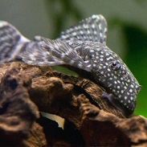

A félhomályt kedveli, nagyon békés faj, de kisebb növényekből időnként csipegethet.
A hím őrzi a bujkáló falára felrakottt nagyszemű petéket, kikielésük után is gondoskodnak róluk a szülők. Nincsen semmilyen speciális igényük.
Elsősorban moszatokkal, algákkal táplákozik, javasolt hetenete forázott, fagyasztott zöldséget vagy forrázott bogarakat adni nekik.
Szeretik a harcsa tápokat is
Szeret bujkálni. Uszadékfára vagy mangrove fára vagy vasfára szüksége van az egészségének fenntartásának érdekében.
~10-12 év
12-15 cm
~900 Ft/db
